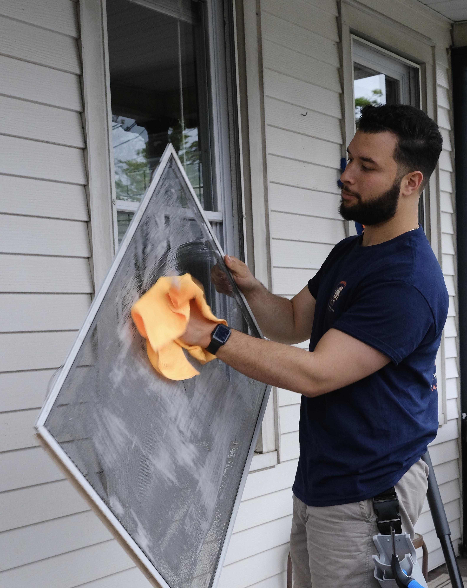

Storefronts
Keep customer-facing glass clean, bright and inviting.
Reliable window cleaning for storefronts, offices and small commercial properties, with one-time and recurring service options.
Keep customer-facing glass clean, bright and inviting.
Interior and exterior window care for professional workspaces.
Monthly, quarterly or seasonal scheduling based on your property’s needs.
As a small owner-operated company, communication stays direct. We can work with your preferred schedule and provide a clear scope for ongoing maintenance.
